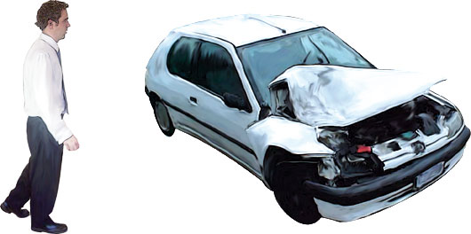
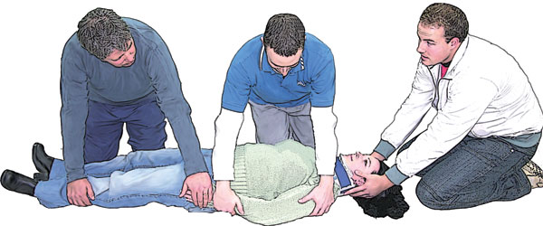
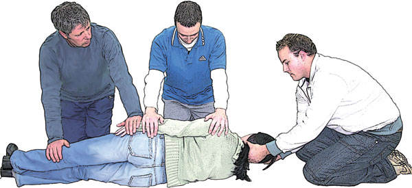

Examing a Casualty
Examing a Casualty
At an incident it is important that you note as much information as you can. Details such as the estimated speed at which a car was moving, the way it hit an object, the size and shape of that object and whether the casualty was conscious or unconscious when you arrived.
Note all this and report it to the ambulance personnel or doctor. These are important details for emergency personnel trying to evaluate the casualty's injuries. You must approach the incident in a confident and methodical way. This not only allows you to gain information, but also presents you as someone who knows what they are doing. This attitude imparts confidence to the casualty and bystanders.
The approach
Take the time to look at the scene for anything that may threaten your safety or the safety of those on or around the scene.
Look for the number of casualties involved. Look for bystanders who may be able to supply information on what happened and the number of casualties.
What are your impressions as you approach the incident?
Quickly confirm in your mind just what is present; bystanders, other vehicles, power lines, power cables, or collapsed structures.
Primary examination
Check to see if the casualty is conscious. If unconscious treat as per the Emergency Action Plan.
Check to see if there is severe life threatening bleeding and control immediately.
Try to obtain a history from:
 The casualty
The casualty
 Bystanders
Bystanders
At this point you are able to decide what approach and treatment is appropriate.
If the casualty is conscious ask three important questions:
1. What happened?
2. Where does it hurt the most?
3. Can you take a deep breath?
These three questions will give you information from the casualty, including whether the casualty remembers the incident (were they unconscious), what injury hurts the most, and if any chest injuries may be affecting breathing.
Pay attention to: History – the incident (SAMPLE)
 Signs and symptoms
Signs and symptoms
 Allergies
Allergies
 Medication
Medication
 Past illnesses
Past illnesses
 Last time the casualty ate or drank
Last time the casualty ate or drank
 Event – history of injury/illness (what happened, where and when)
Event – history of injury/illness (what happened, where and when)
Signs – what you can see or feel for yourself
 Bleeding, swelling, bruising
Bleeding, swelling, bruising
Symptoms – what the casualty tells you
 Pain, blurred vision, nausea
Pain, blurred vision, nausea
Observations
One of the most important things a first aider can do is to take and record accurate observations. There are four vital observations that should be, if at all possible, written down against the time and the name of the casualty. These observations are:
 Skin appearance
Skin appearance
 Conscious state
Conscious state
 Pulse
Pulse
 Respiration
Respiration
The first set of these observations, once taken and recorded,becomes the 'baseline observations'. All changes in the casualty's observations are measured against this baseline for improvement or worsening of their condition.
Skin Appearance
The appearance of the skin can be a good indicator of the casualty's condition. Check colour, condition and temperature of the skin.
Colour – check the colour of skin in the mouth and lips. Red, pink, pale or blue.
(Checking the lining of the mouth and lips allows a quick assessment of casualties from all ethnic backgrounds).
Temperature – is the skin warm or cool to touch?
Condition – is the skin dry or wet?
Conscious State
Check the casualty for a response by touching the casualty on the shoulders and asking loudly 'are you all right'?
Note the following:
 Is the casualty alert and aware of time and place?
Is the casualty alert and aware of time and place?
 Is the casualty confused, violent or agitated?
Is the casualty confused, violent or agitated?
 Is the casualty roused by touch or pain?
Is the casualty roused by touch or pain?
There are 4 levels of consciousness (AVPU).
1. Alert – the casualty is responsive and alert and aware of time and place.
2. Responsive to Verbal stimulus – the casualty is not aware of time and place.
3. The casualty responds only to Painful stimuli.
4. Unresponsive – the casualty does not respond to stimuli.
Pulse
The pulse can be difficult to find and should only be used when time permits and when assessing a casualty that is breathing. DO NOT use a pulse to determine if resuscitation is required.
The neck is the best location to check for a pulse, which is called the carotid. The carotid is the strongest and most easily accessible of all the pulse points. The radial pulse (wrist) is often the easiest to find. When taking a pulse, note how fast the pulse rate is over one minute. A normal adult will have a pulse rate of 60 to 100 beats per minute. Children and babies have a faster heart rate than adults. Note the rate, rhythm and strength of the pulse.
 Rate – How many beats per minute? Count for 15 seconds and multiply by 4
Rate – How many beats per minute? Count for 15 seconds and multiply by 4
 Adults – 60 to 100 beats per minute
Adults – 60 to 100 beats per minute
 Children – 90 to 130 beats per minute
Children – 90 to 130 beats per minute
 Infants – 120 to 160 beats per minute
Infants – 120 to 160 beats per minute
 Rhythm – Is the pulse regular or irregular?
Rhythm – Is the pulse regular or irregular?
 Strength – Is the pulse strong or weak?
Strength – Is the pulse strong or weak?
Respiration
 Rate – How many breaths per minute? Count for 15 seconds and multiply by 4
Rate – How many breaths per minute? Count for 15 seconds and multiply by 4
 Rhythm – Is the breathing regular or irregular?
Rhythm – Is the breathing regular or irregular?
 Sounds – Is there gasping, gurgling, wheezing or snoring?
Sounds – Is there gasping, gurgling, wheezing or snoring?
Pain
Pain can be one of the most difficult observations to make as every person has a different 'pain threshold'. Ask open questions such as "can you describe your pain to me", not "does your pain feel sharp".
As pain is subjective the first aider needs to use a tool such as the PQRST of pain.
Provocation – What brought the pain on? Did the pain start when the casualty was at rest or did it start with activity or injury?
Quality – How is the pain described? Is it intermittent, sharp, dull, heavy, burning or an ache?
Region/Radiation – Where is the pain situated, and does it travel to other areas of the body?
Severity – Measure the pain on a scale of 1 to 10. A rating of 10 on this scale would be severe pain.
Time – How long ago did the pain start?
Secondary examination
Now that you know the casualty's basic observations and condition you have more time to thoroughly examine a conscious casualty by systematically Looking and Feeling (LAF).
 Look for deformity, wounds and swelling
Look for deformity, wounds and swelling
 And
And
 Feel for deformity, tenderness and swelling
Feel for deformity, tenderness and swelling
A good tool to remember the signs of injury is DOTS.
 Deformity
Deformity
 Open wounds
Open wounds
 Tenderness
Tenderness
 Swelling
Swelling
Conduct a head-to-toes secondary examination. Remember to be sensitive to the age, sex and culture of the casualty.
Start the secondary examination by informing the casualty of what you are going to do and the reason for doing the examination. Listen carefully to what the casualty tells you while doing your examination.
Head:
 Bleeding
Bleeding
 Fractures
Fractures
 Bruising
Bruising
 Swelling
Swelling
 Tenderness or pain
Tenderness or pain
 Cerebral spinal fluid (CSF) from ears. CSF is a clear colourless fluid that may also have blood present
Cerebral spinal fluid (CSF) from ears. CSF is a clear colourless fluid that may also have blood present
 Ask casualty to bite to check for fractured jaw
Ask casualty to bite to check for fractured jaw
Neck:
 Bleeding
Bleeding
 Fractures
Fractures
 Bruising
Bruising
 Swelling
Swelling
 Deformity
Deformity
 Tenderness or pain
Tenderness or pain
 Numbness or tingling
Numbness or tingling
 Check for Medical Alert necklace
Check for Medical Alert necklace
 Ask casualty to wiggle fingers and toes
Ask casualty to wiggle fingers and toes
 Ask casualty to squeeze your hands to check for strength
Ask casualty to squeeze your hands to check for strength
Shoulders and Chest:
 Bruising
Bruising
 Swelling
Swelling
 Gently 'spring' the ribs to check for tenderness or pain
Gently 'spring' the ribs to check for tenderness or pain
 Look for unequal rise of the chest with each breath
Look for unequal rise of the chest with each breath
Abdomen and pelvis:
 Rigidity
Rigidity
 Tenderness or pain
Tenderness or pain
 Swelling
Swelling
 'Guarding' and incontinence
'Guarding' and incontinence
 Gently 'spring' the pelvis to check for tenderness or pain
Gently 'spring' the pelvis to check for tenderness or pain
Arms and Legs:
 Bleeding
Bleeding
 Fractures
Fractures
 Soft tissue injuries
Soft tissue injuries
 Tenderness or pain
Tenderness or pain
 Loss of strength
Loss of strength
 Check for medical alert bracelet
Check for medical alert bracelet
 Check circulation in extremities
Check circulation in extremities
 Ask casualty to move each limb in turn
Ask casualty to move each limb in turn
Back and Spine:
 Bleeding
Bleeding
 Deformity
Deformity
 Tenderness or pain
Tenderness or pain
 'Log roll' and look at all areas of the back of the casualty for signs of injury
'Log roll' and look at all areas of the back of the casualty for signs of injury
